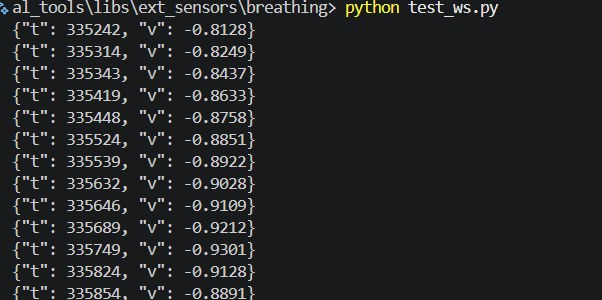

3. ESP32 naar de app (WebSocket)
De riemdata moest van de ESP32 via wifi naar de Reachy-app.
zo 1 november t/m di 3 november 2026
Waarom een WebSocket
De ESP32 moet de ademdata naar de Reachy-app sturen. Ik koos een WebSocket omdat de app die al gebruikt voor de pulssensor van Rio. Zo kon ik hetzelfde patroon volgen (de PhysiologicalClient) en hoefde ik geen nieuwe manier te verzinnen om te verbinden.
Ik begon hier op zo 1 november mee. Echt duidelijke stappen kon ik pas op 2 en 3 november opschrijven, omdat ik eerst wilde zien hoe Rio het in zijn deel had gedaan. Dat was goed gedaan, dus ik nam een deel van zijn systeem over.
Riem → ESP32 → WebSocket via wifi → Reachy-app
Stappen
- De ESP32 draait een kleine WebSocket-server op poort 80, pad
/ws. - Hij doet de handshake en beantwoordt pings, zodat de app de verbinding niet verliest.
- Hij stuurt per meting één JSON-bericht, bijvoorbeeld
{"t": 123456, "v": -0.12, "state": "inhaling", "rate": 14.5, "depth": 0.52, "range": 312}. - In de app leest de
BreathingClientdat bericht en bewaart de laatste meting. - Het adres van de ESP32 staat in het bestand
.envalsBREATHING_SENSOR_HOST.

test_ws.py). De berichten komen binnen, nog met alleen t en v. In de Thonny-screenshot op pagina 2 zie je de server draaien op ws://…/ws.De handshake
De handshake volgt RFC 6455. De waarde Sec-WebSocket-Accept is de SHA-1 van de sleutel plus een vaste GUID.
Probleem. Verbinding geweigerd. Het script luisterde op poort 8080, maar de client verbond met ws://192.168.4.1/ws (poort 80).
Oplossing. Ik zette PORT = 80 in het script.
Probleem. Mijn testscript werkte niet. Ik had de plaatsaanduiding <pad.naar.je.tool> letterlijk geplakt en het script in Thonny gedraaid in plaats van in PowerShell.
Oplossing. Ik vulde het echte pad in en draaide de test als Python-module vanuit src\reachy in PowerShell.
Wat ik hieruit leer
Veel problemen waren kleine fouten (een poortnummer, een plaatsaanduiding). Eerst de kleine dingen controleren, zoals de poort en waar ik een commando draai, scheelt veel tijd.
Ik leerde ook dat het slim is om een werkend voorbeeld van een teamgenoot te bekijken voordat je zelf iets nieuws bedenkt.
Bronnen
- RFC 6455, The WebSocket Protocol. https://datatracker.ietf.org/doc/html/rfc6455
- MicroPython, network. https://docs.micropython.org/en/latest/library/network.html
- MicroPython voor de ESP32. https://micropython.org/download/ESP32_GENERIC/